May 21, 2541 miles
| We started the day pulling out of camp at about 8:00, after a quick breakfast. | |
| The day started off with a lot of low hanging clouds covering the tops of many of the mountians. As the day progressed we would travel through sun shine, rain, and snow. | 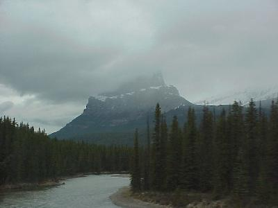 |
| More of the wildlife on our trip, we spotted three mountain goats on the side of one of the mountains. They were pretty contenet to just lay there (they are the white things in the upper right and lower left of the picture). | 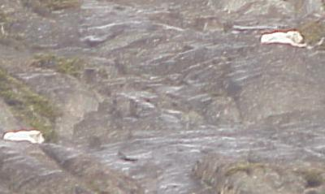 |
| Our first glacier. We stopped by the Icefield Center in Jasper National Park; across from the Center is the Athabasca Glacer. This picture is not the Glacier, but one of the smaller ice/snow flows near the Glacier (since all of the snow has not melted yet it would be hard to see where the Glacier stopped and the snow field begins. | 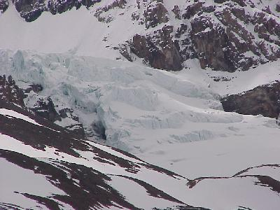 |
| As we drove further north through Banff and Jasper National Parks there was view after view of the mountains. The clouds finally loosened their hold on the mountain tops for much of the day. | 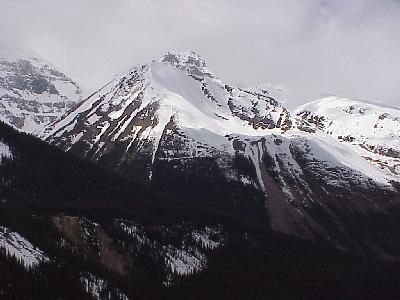 |
| ... which led to view after view of the mountain sky line. | 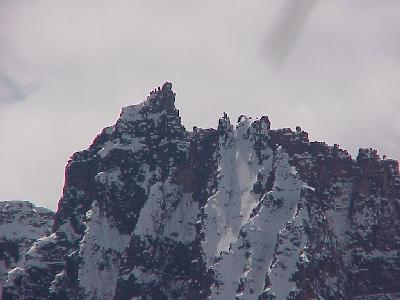 |
| We had the opportunity to add to our growing list of animals seen. Today, in addition to the mountain goats, we saw mule deer and | 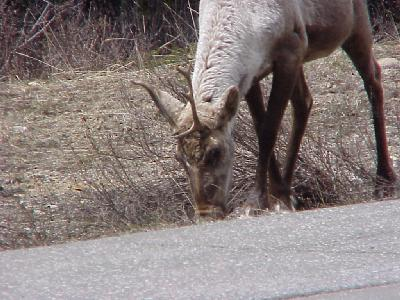 |
| Big Horn sheep. Many of the animals, like this sheep, look a little scruffy as they loose their winter coats. Don't ask me what he did to his horns. We are getting a little better at getting picures of what we see. |
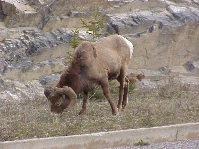 |
| As we drove further north we also started to see more waterfalls, such as the Sunwapta Falls and | 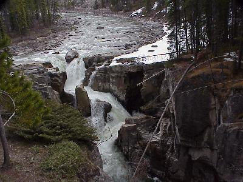 |
| Athabasca Falls. | 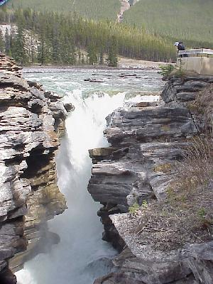 |
| Along with the increased number of falls has come a change in the sizes and shapes of some of the gorges the rivers have cut. | 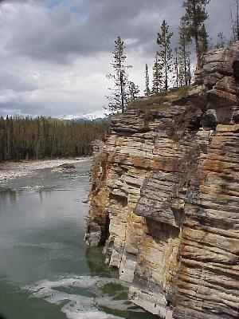 |
| Well, we deserved a night of comfort after camping for six straight nights. Tonight we stopped a little earlier and stayed in a cabin. The exchange rate (about $1.00 US to $1.50 Canadian) makes this luxury a little more affordable. We also took the opportunity to do a few loads of clothes and clean out the van. | 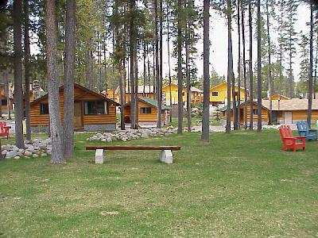 |
| The view from the cabins was fantastic. | 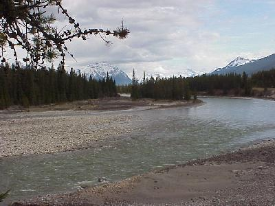 |
| While resting a little we watched the rafters and | 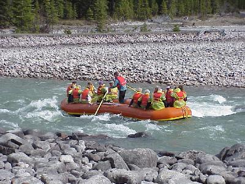 |
| kyakers (this picture is for my brother); but boy was the water cold! | 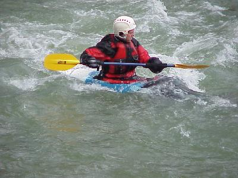 |
| We checked onto the cabin, not far from
Jasper, at about 4:00 PM, after traveling 186 miles.
Another day of not much driving, but a lot of sight
seeing. Wildlife for the day included: mule tail deer (7), mountain goats (5), big horn sheep (1) and a few more elk (we quit counting). |
|